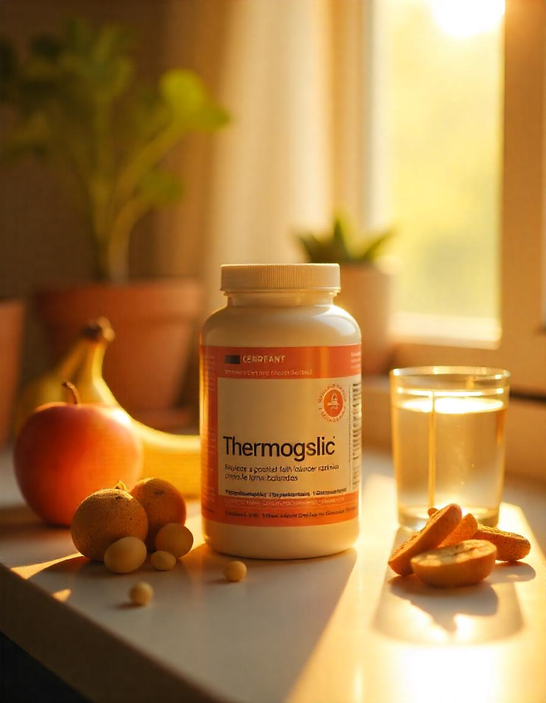

Os termogênicos são suplementos alimentares que ajudam a aumentar o gasto calórico do organismo e
aceleram o metabolismo, favorecendo a queima de gordura. Eles contêm substâncias que estimulam a
termogênese, o processo pelo qual o corpo gera calor e queima calorias.
Benefícios dos Termogênicos:
- Auxiliam na queima de gordura e na perda de peso, estimulando o aumento da temperatura corporal.
- Aceleram o metabolismo, promovendo maior gasto calórico, mesmo em repouso.
- Podem aumentar os níveis de energia e disposição para atividades físicas.
- Contribuem para a melhoria da performance nos treinos e atividades físicas.
- Ajudam na redução do apetite, controlando a fome e evitando excessos alimentares.
Onde Encontrar o Termogênico
Os suplementos termogênicos podem ser encontrados em lojas especializadas em suplementos alimentares,
farmácias e sites especializados em nutrição esportiva, como:
- Loja X - Rua das Suplementos, 123
- Farmácia Y - Avenida da Saúde, 456
- Online: Sites como Mercado Livre, Amazon e lojas especializadas em nutrição e emagrecimento.
Como Tomar o Termogênico
A dosagem e a forma de tomar os termogênicos variam de acordo com a formulação e as necessidades
individuais. Recomenda-se:
- Iniciar com 1 cápsula por dia, para avaliar a tolerância do organismo.
- O consumo deve ocorrer preferencialmente pela manhã ou antes do treino, para potencializar o efeito
termogênico durante a atividade física.
- Evitar o consumo de termogênicos à noite, pois podem interferir no sono devido ao aumento da energia
e disposição.
É importante consultar um nutricionista ou médico antes de iniciar o uso de termogênicos, para garantir
que o suplemento seja adequado às suas necessidades e condições de saúde.
Como é Produzido o Termogênico
O termogênico é produzido a partir de uma combinação de substâncias naturais e sintéticas que aumentam a
taxa de metabolismo. O processo de produção envolve:
- Seleção de ingredientes ativos, como cafeína, chá verde, pimenta caiena, gengibre e outros compostos
estimulantes.
- Formulação dos ingredientes para criar uma composição balanceada que maximize os efeitos
termogênicos.
- Processamento e encapsulamento ou embalagem do suplemento em pó ou cápsulas, de acordo com o formato
escolhido.
Após a produção, os termogênicos são testados quanto à qualidade e segurança antes de serem
disponibilizados para venda.